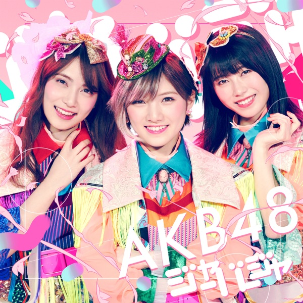

サカミチ
サカミチ国境のない時代こっきょうのないじだい

初収録リリース「ジャーバージャ」のジャケット
坂道AKB
発売日：2018-03-14
収録：ジャーバージャ（AKBSG）
種別：坂道AKB楽曲
センター：長濱ねる
作曲：Yo-Hey
編曲：Yo-Hey
ライブ披露：3件
フォーメーション
上が後列、下が前列です。色付きがセンター。（参考データに基づく）
 菅井友香
菅井友香 山下美月
山下美月岡部麟
 加藤史帆
加藤史帆小栗有以
 大園桃子
大園桃子 渡邉理佐
渡邉理佐 久保史緒里
久保史緒里 小林由依
小林由依岡田奈々
 与田祐希
与田祐希向井地美音
 今泉佑唯
今泉佑唯松井珠理奈
 堀未央奈
堀未央奈 長濱ねる
長濱ねる 齋藤飛鳥
齋藤飛鳥宮脇咲良
参加メンバー（18名）
齋藤飛鳥、堀未央奈、大園桃子、久保史緒里、山下美月、与田祐希、今泉佑唯、小林由依、菅井友香、長濱ねる、渡邉理佐、加藤史帆、向井地美音、宮脇咲良、小栗有以、岡田奈々、岡部麟、松井珠理奈